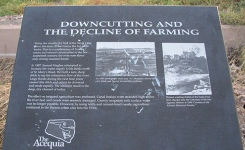

I noticed this sign along the bank of the Santa Cruz River in Tucson, Arizona. Since there's very little information online about the decline of that river, I figured I'd add something for curious Google searchers.

Here's the story on the sign:
Today the usually dry bed of the Santa Cruz River lies some 20 feet below the top of its banks. Due to a combination of human errors and natural catastrophies in the late nineteenth century, the river now flows only during seasonal floods.
In 1887, Samuel Hughes attempted to increase the water supply to his fields north of St. Mary's Road. He built a new, deep ditch to tap the subsurface flow of the river. Large floods during the next four years caused this ditch and others to downcut and erode rapidly. The ultimate result is the deep, dry channel of today.
The effect on irrigated agriculture was profound. Canal intakes were stranded high above the river bed, and canals were severely damaged. Gravity irrigation with surface water was no longer possible. However, by using wells and cement-lined canals, agriculture continued in the Tucson urban area into the 1930s.